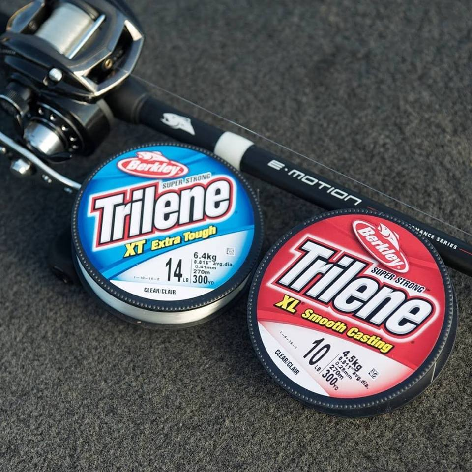
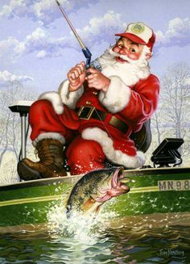
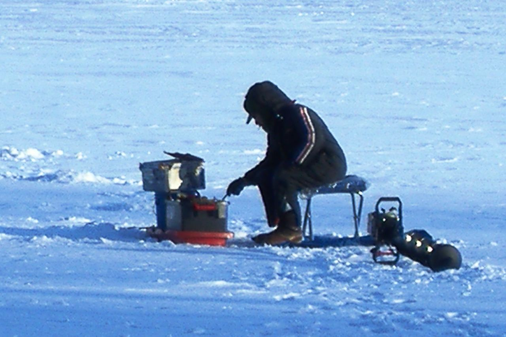

What is new!
Anglers and sport fishing enthusiasts are able to buy their newest products
in FishWish© online store and receive their products in the shortest
time with the new Express Delivery Services! Since December 2019, Express Delivery Service has been
launched and the delivery time for products cross Canada has reduced by less than three working days.
Also recently we have provided useful new sets of information for trout and salmon anglers, including
species info, angling tips and effective baits for inroduced fish species on FishWish©
Fishing Info.!
For trout anglers living near St. John's, we have provided a recommended spots
list where are the most popular trout fishing spots! Feel free to contact us
for further information and enjoy your fishing time!
Go to top of page

Xmas sales !
X-mas is around the corner! Haven’t buy your X-mas gifts yet? We have good news for you!
Just browse and Click! It is easy as a pie!
With incredible competitive prices for this year X-mas, you have a great opportunity to give a variety of
luxury and surprizing gifts to those who like!
For Christmas, we have provided a new list of diverse unique
products. A significant amount of winter-related and
Ice fishing products are included in our products list.
Just brows our web page and enjoy finding the high quality products with awesome prices!

Ready for season sale?
Most anglers looking to go ice-fishing can finally head out to their favourite lakes and ponds.
The 2019 winter trout fishing season begins Feb. 1 in insular Newfoundland,
as well as central, western and northern Labrador.
We've provided our new Ice Fishing products to make sure that every
body would enjoy fishing everytime, everywhere! It does not matter how much you would
spend money for such a great experience on the ice! We almost have everything
for your ice fishing advanture!
Also in our "Fishing Tour" services,
there are ice fishing tours provided for people who want have a great memory of cold winter and fishing advanture!